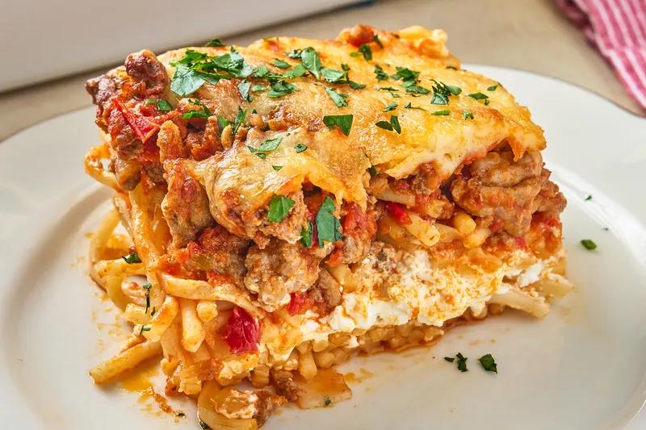

Lasagna

Description
Lasagna is a classic Italian dish made with layers of pasta, meat sauce
(usually made with ground beef or pork), ricotta cheese, mozzarella cheese,
and Parmesan cheese. It is baked in the oven until the cheese is melted and
bubbly, and the flavors are well combined. Lasagna is a hearty and comforting
meal that is perfect for family dinners or special occasions.
Ingredients
- 12 lasagna noodles
- 1 lb ground beef
- 1 jar marinara sauce
- 15 oz ricotta cheese
- 2 cups mozzarella cheese
- 1/2 cup Parmesan cheese
Steps
- Cook the lasagna noodles according to package instructions.
- Preheat the oven to 375°F (190°C).
- In a large skillet, brown the ground beef and drain the excess fat.
- Add the marinara sauce and simmer for 10 minutes.
- In a mixing bowl, combine the ricotta cheese, 1 cup of mozzarella cheese, and Parmesan cheese.
- Layer the pasta, meat sauce, and cheese mixture in a baking dish.
- Sprinkle the remaining mozzarella cheese on top.
- Bake for 25-30 minutes until the cheese is melted and bubbly.
Home